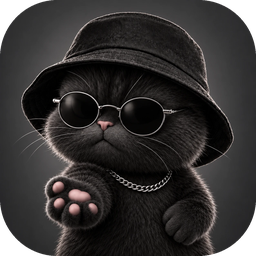
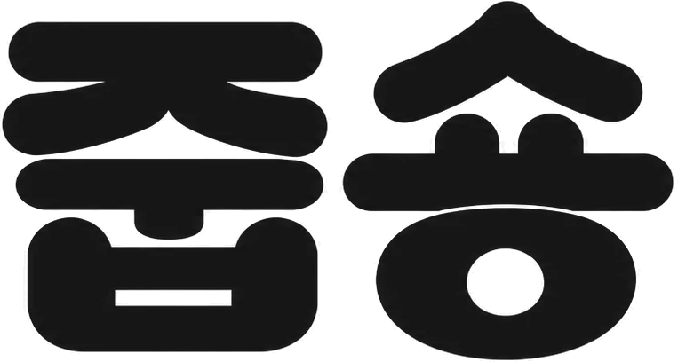
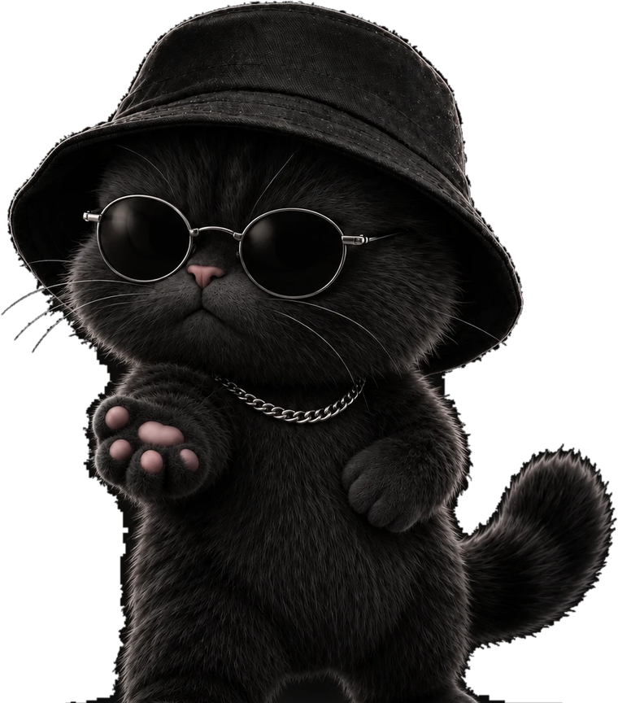

유튜브 URL만 붙여넣으면 원하는 화질로 바로 다운로드. 캡슝과 같은 감성의 가벼운 맥 앱이에요. 실행하면 다운로드 화면이 열려요 — 클릭 한 번으로 슈우웅~!
유튜브 링크를 붙여넣고 “정보 가져오기”만 누르면 제목·길이·화질이 뜹니다.
최고 화질(자동)부터 4K·1080p·720p까지, 원하는 화질을 골라 받습니다.
H.264 mp4로 변환해 어디서나 재생. ffmpeg가 앱에 내장되어 별도 설치가 필요 없어요.
실행하면 브라우저에 깔끔한 다운로드 화면이 열립니다. 진행률도 실시간으로.
Apple 개발자 서명이 없는 개인 배포용이라, 첫 실행 때 macOS가 경고를 한 번 보여줍니다. 아래 순서대로 하면 됩니다.
창 안의 화살표(Drag)를 따라 오른쪽 Applications 폴더로 옮기면 설치됩니다.
시스템 설정 → 개인정보 보호 및 보안 → 아래로 스크롤해 여전히 열기. 이후로는 바로 열립니다.
유튜브 URL을 붙여넣고 화질을 골라 받으세요. 받은 영상은 다운로드 폴더에 저장됩니다.